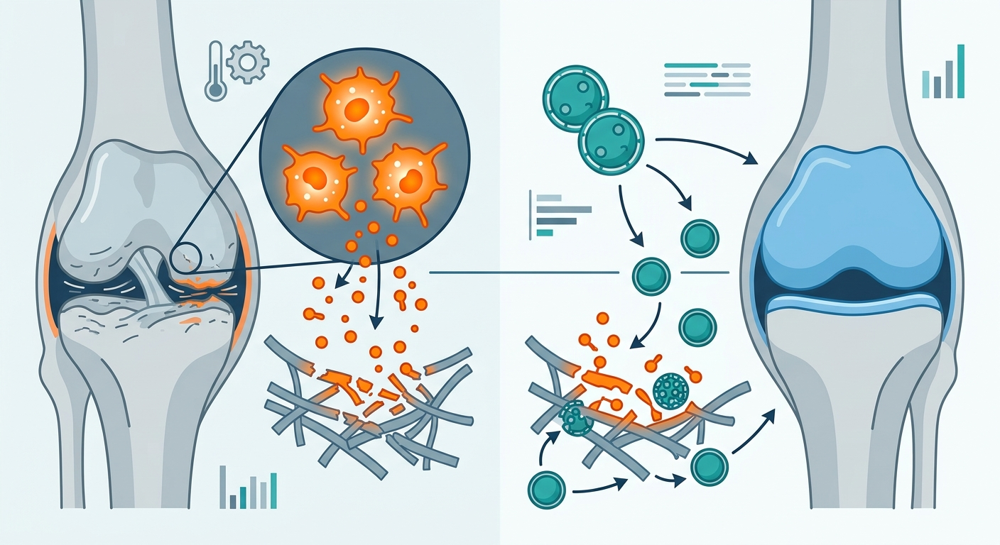

The Self-Healing Nanotech That Could Rebuild Our Aging Joints

Picture the human knee as a high-performance piston. For the first few decades of life, it glides effortlessly, cushioned by a natural biological lubricant. But as we age, this system breaks down. The friction of daily life transforms from a mechanical annoyance into a biological emergency: grinding joints trigger oxidative stress, causing local cells to turn into destructive "zombie" cells—senescent cells that secrete inflammatory factors and erode cartilage. For millions suffering from osteoarthritis, current treatments like hyaluronic acid injections are merely temporary band-aids. They degrade rapidly under the high-shear forces of walking, leaving joints unprotected and accelerating the decline.
Enter a team of material scientists and biologists who have designed a revolutionary "smart" lubricant: the 6S-NP supramolecular nanoparticle. Published in the journal Advanced Materials, this "six-in-one" nanoplatform is a masterclass in bio-inspired engineering. Imagine a lubricant that actively adapts to the pressure you put on it. Under the shear stress of movement, 6S-NP’s temporary molecular bonds un-zip, shedding highly hydrated zwitterionic chains that form a super-slippery protective barrier. The moment you take a step and the pressure is released, these molecular "Legos" spontaneously snap back together, rebuilding the nanoparticle and locking the lubricant in place for the next impact. This self-healing cycle reduces joint friction by over 90% compared to standard clinical alternatives.
But 6S-NP is far more than a mechanical grease; it is a biological trojan horse. Nestled within its dynamic structure are therapeutics held in place by linkers that break apart only when they encounter reactive oxygen species (ROS)—the chemical smoke of tissue inflammation. In the highly inflamed environment of an osteoarthritic joint, 6S-NP detects this smoke and releases its payload, directly suppressing inflammatory cytokines like IL-6 and IL-1β. Crucially, the treatment reverses cellular senescence in chondrocytes (cartilage-producing cells), turning back the biological clock of joint tissue. In animal models of load-driven knee osteoarthritis and high-frequency jaw joint degeneration, the nanoparticles successfully preserved cartilage and restored normal joint structure.
Yet, as remarkable as this molecular Swiss Army knife appears, the path from the laboratory bench to the clinic is notoriously steep. Translating these findings from rodents to humans represents a massive leap; human joints endure orders of magnitude more mechanical load and sheer volume of cycles over decades, rather than weeks. Furthermore, the long-term safety profile of synthetic supramolecular nanoparticles remains an open question. Researchers must prove that the repeated breakdown and reassembly of these nanoparticles do not trigger adverse immune responses or systemic toxicity as the components eventually filter out of the joint space. We are still years, and likely several large-scale clinical trials, away from seeing this technology deployed in human patients.
Sources & Citations:
Primary Source: Six in One: 6S-NP Supramolecular Nanoparticles for Super-Lubrication, Inflammation Suppression, and Senescence Reversal in Mechanically Aggravated Joint Disorders. (Advanced materials (Deerfield Beach, Fla.))
- Zhang, Y. et al. "Six in One: 6S-NP Supramolecular Nanoparticles for Super-Lubrication, Inflammation Suppression, and Senescence Reversal in Mechanically Aggravated Joint Disorders." Advanced Materials (2024). https://doi.org/10.1002/adma.75311